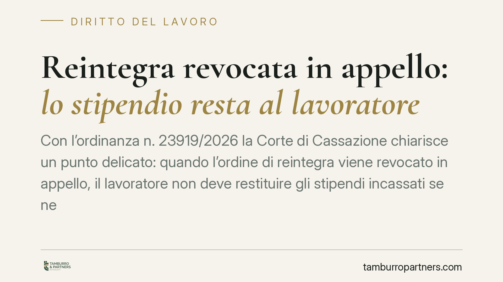

Reintegra revocata in appello: lo stipendio resta al lavoratore
Con l'ordinanza n. 23919/2026 la Corte di Cassazione chiarisce un punto delicato: quando l'ordine di reintegra viene revocato in appello, il lavoratore non deve restituire gli stipendi incassati se nel frattempo ha effettivamente lavorato e l'azienda ne ha diretto l'attività. Le somme diventano retribuzione tutelata ex art. 2126 c.c. Vediamo perché conta per aziende e dipendenti.

Il caso
Un lavoratore viene reintegrato dal Tribunale di Roma a seguito di un licenziamento ritenuto illegittimo. L'azienda lo riammette in servizio e lo utilizza concretamente: gli assegna mansioni, impartisce direttive, esercita cioè i propri poteri organizzativi.
In secondo grado la Corte di Appello di Roma ribalta la decisione e revoca l'ordine di reintegra. A questo punto il datore pretende la restituzione degli stipendi versati durante il periodo di riammissione. La Cassazione, con l'ordinanza n. 23919/2026, dice no.
Inquadramento normativo
Il nodo tecnico ruota attorno a tre norme.
L'art. 336 c.p.c. disciplina l'effetto espansivo della riforma in appello: quando una sentenza viene riformata, cadono anche gli atti dipendenti. In linea di principio, revocata la reintegra, dovrebbe cadere pure il titolo che giustificava il pagamento degli stipendi.
Qui però interviene l'art. 2126 c.c., norma spesso sottovalutata. Stabilisce che la nullità o l'annullamento del contratto di lavoro non producono effetti per il periodo in cui il rapporto ha avuto esecuzione. In parole semplici: se il lavoro è stato prestato davvero, chi lo ha ricevuto deve pagarlo, a prescindere dalla sorte giuridica del titolo. È il principio della cosiddetta "prestazione di fatto".
Il collegamento con l'art. 2094 c.c. completa il quadro. Quella norma definisce il lavoratore subordinato come chi si obbliga a collaborare "alle dipendenze e sotto la direzione" del datore. Se l'azienda ha esercitato questi poteri direttivi durante la reintegra, il rapporto è stato un rapporto di lavoro reale, non una finzione processuale.
Il principio della Cassazione
La Corte distingue nettamente due situazioni.
La prima: il lavoratore viene reintegrato ma l'azienda non lo utilizza, lo lascia a casa pur pagandolo. In questo caso le somme hanno natura di anticipo collegato all'ordine giudiziale e, caduto quell'ordine, possono essere ripetute.
La seconda: il lavoratore viene riammesso e lavora effettivamente, sotto la direzione del datore. Qui le somme non sono un anticipo, ma vera retribuzione di una prestazione eseguita. Scatta l'art. 2126 c.c. e la retribuzione diventa, nelle parole sostanziali della decisione, intoccabile.
Il criterio dirimente, quindi, non è la sorte dell'ordine di reintegra, ma il comportamento concreto dell'azienda. È stato esercitato il potere direttivo? C'è stata attività lavorativa reale? Se sì, lo stipendio resta al lavoratore.
Implicazioni pratiche
Per le aziende il messaggio è chiaro: riammettere il lavoratore e farlo lavorare non è una scelta neutra sul piano economico. Se in appello la reintegra cade, gli stipendi relativi al periodo di effettiva attività non si recuperano. Il rischio di restituzione si limita ai casi in cui il dipendente sia stato pagato senza lavorare.
Questo incide sulle strategie processuali. In pendenza di appello, l'azienda deve valutare con attenzione se utilizzare il lavoratore reintegrato o sospenderne l'impiego, consapevole che le due opzioni hanno conseguenze patrimoniali opposte.
Per il lavoratore, la pronuncia offre una tutela significativa: chi ha davvero lavorato non si vede esposto, a distanza di anni, a una richiesta di restituzione di somme spesso già spese per esigenze di vita.
Cosa fare in concreto
- Aziende: documentate con precisione la gestione del lavoratore reintegrato. Ordini di servizio, assegnazione mansioni e comunicazioni interne provano se i poteri direttivi sono stati esercitati.
- Aziende: prima di riammettere in servizio in pendenza di appello, valutate con un legale l'impatto economico delle diverse opzioni gestionali.
- Lavoratori: conservate ogni prova dell'attività svolta durante la reintegra (badge, email, comunicazioni, testimonianze). È il fatto decisivo in caso di contestazione.
- Entrambi: non confondete l'ordine di reintegra con l'effettiva prestazione lavorativa. La differenza determina chi tiene gli stipendi.
- Entrambi: in presenza di sentenza di appello sfavorevole, verificate la natura delle somme percepite prima di avviare o subire una richiesta di restituzione.
Disclaimer
Contributo informativo a cura di Tamburro & Partners - Avv. Giuseppe Tamburro. Non costituisce parere legale.
Ogni storia di lavoro ha i suoi tempi.
Se gestisci HR e vuoi un confronto su contenzioso, ispezioni o licenziamenti, scrivi allo studio. Ti rispondiamo entro un giorno lavorativo.